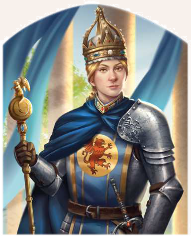

"Endlich haben Wir den Heptarchen Einhalt geboten, nun müssen Wir das Reich wieder aufbauen. Selbst Wir als Kaiserin sind Uns dafür nicht zu schade. Wir nehmen unsere göttergegebene Aufgabe nicht nur ernst, sondern Wir füllen sie aus. Wie wollt Ihr es denn nun halten, Herr Baron?"
Rohaja von Gareth ist die junge Kaiserin des Mittelreiches. Sie gilt als Heldenkaiserin, die tatkräftig selbst mit anpackt und aufrechte Streiter um sich schart, die ihrem Willen folgen. Durch die Schlachten der Vergangenheit ist sie zu einer umsichtigen Herrscherin geworden, die mit ihrem Kaiserhof von Pfalz zu Pfalz reist, um sich ein Bild von Sorgen und Nöten ihrer Untertanen zu machen und Recht zu sprechen. Verheiratet ist sie inzwischen mit ihrer Jugendliebe, dem Kaiseringemahl Rondrigan Paligan, der ihr als Reichsgroßgeheimrat in der Hauptstadt dient und verlässlich den Rücken stärkt. Kinder sind aus dieser Verbindung, sehr zur Sorge des Volkes, mehr aber noch des Adels, bisher keine hervorgegangen. Manche munkeln inzwischen gar, dass die Kaiserin verlucht wurde, und daher keinen Erben gebären kann. Inzwischen setzen viele ihre Hoffnungen in Sachen Nachwuchs auf Rohajas um wenige Minuten jüngere Zwillingsschwester Yppolita, die allerdings eine Gildemagierin ist - und daher nicht selbst den Thron besteigen dürfte.
Volkes Stimme
- "Rohaja ist eine Heldin, eine gute Kaiserin. Auf die Heldenkaiserin lass ich nichts kommen.
Mein Hof stünde nicht mehr, hätte sie in der Schlacht von Mendena nicht das Reich befreit und uns alle gerettet!"
- "Heldenkaiserin, pah! Sie sollte eine Regentin sein.
Das Reisekaisertum kommt eher einer Flucht gleich.
Sie flieht vor ihrer Verantwortung und hat den Adel quasi entrechtet.
Gut, dass die Provinzherren ihr entschieden die Stirn geboten haben.
Wie viele Könige gibt es denn noch? Seht ihr, was ich meine?"